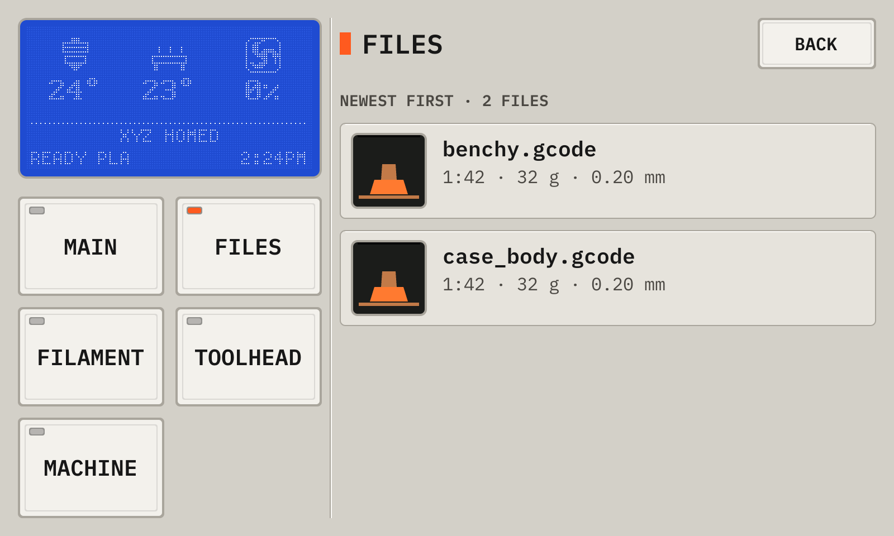
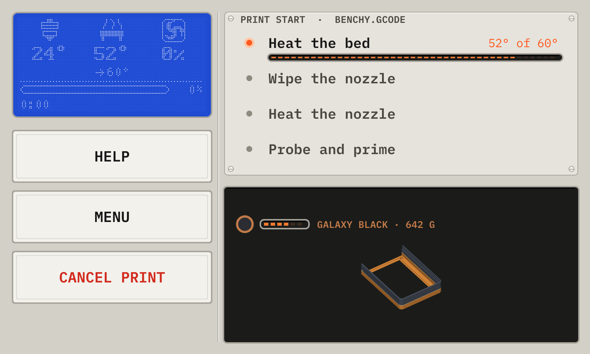
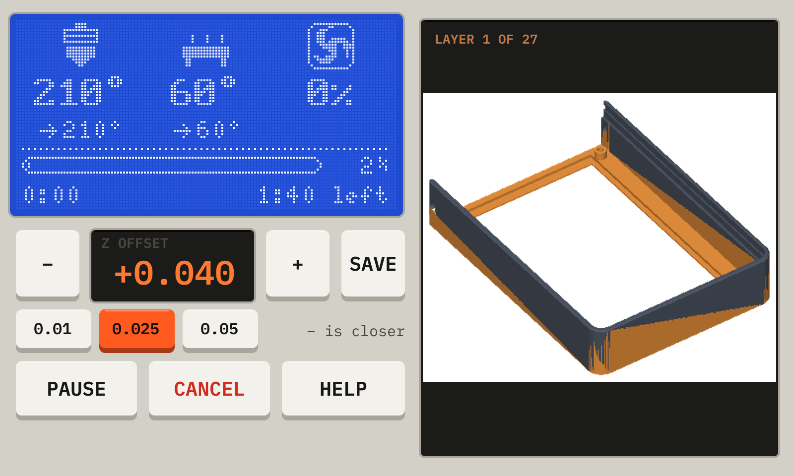
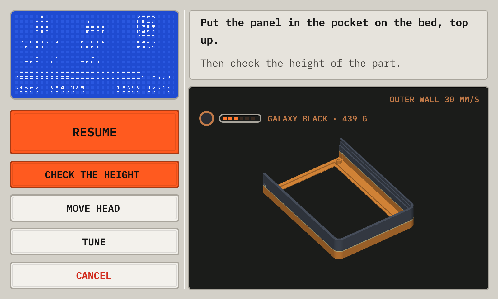
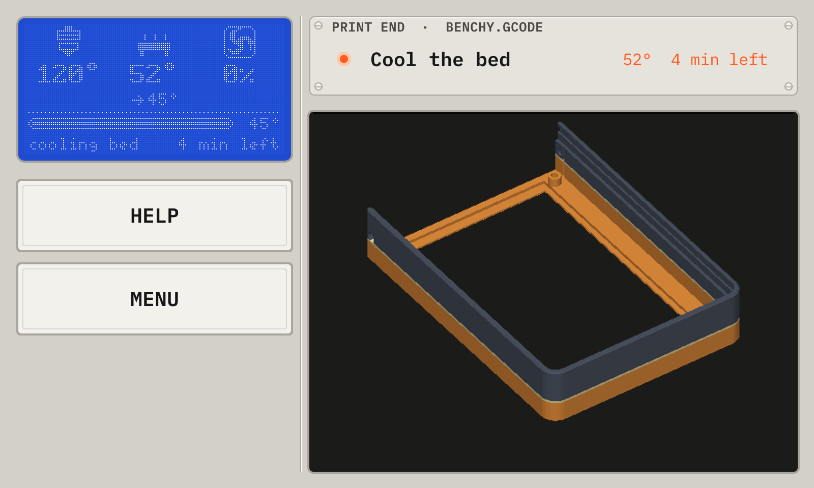
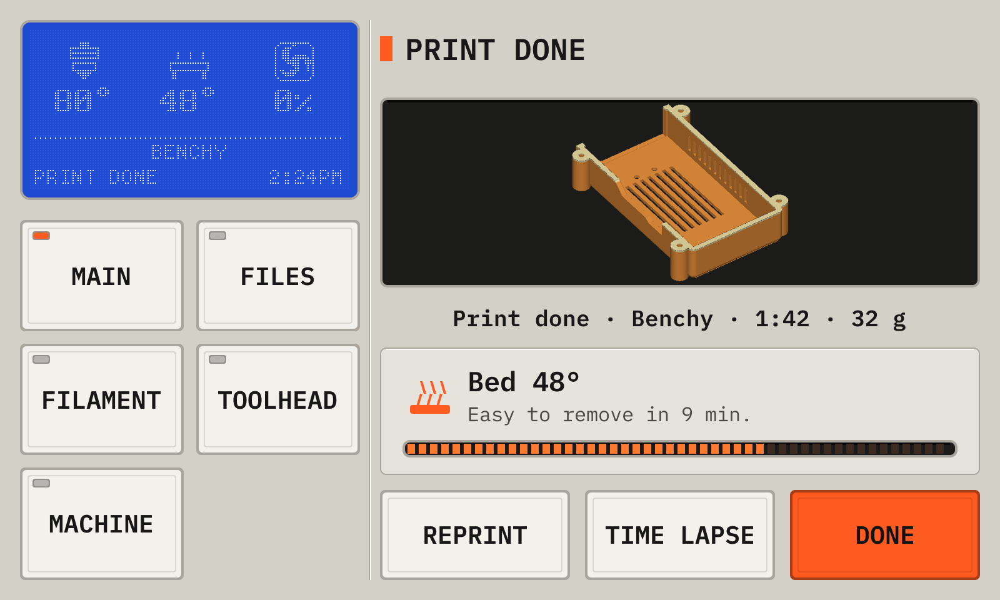
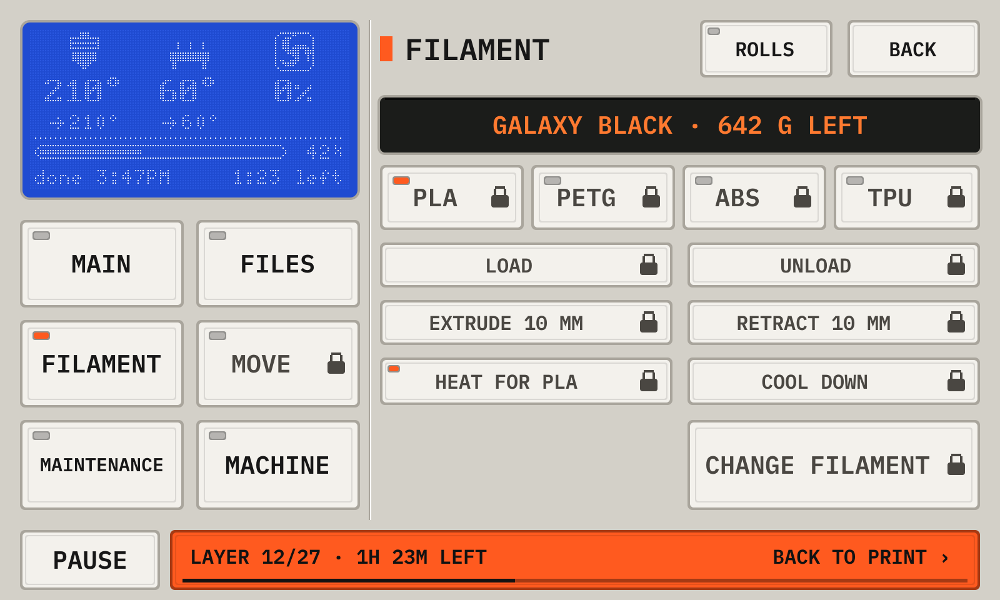

The deck UI · wide
Print a part
07Send a file from the slicer
The deck answers the OctoPrint API that slicers use to send files and to start prints.
In Cura, add the deck with the OctoPrint Connection plugin. The deck asks "Allow Cura to use the Printdeck?". Tap Allow.
In OrcaSlicer or PrusaSlicer, add a printer of the type OctoPrint with the address http://printdeck.local, and the API key of the system page.
08Start a print
The files are the G-code files that the slicer sent, or that you uploaded in the browser. The newest file is at the top.
Each file shows what the slicer wrote into it: the print time, the filament and the layer height. Cura, PrusaSlicer, OrcaSlicer and Bambu Studio write this data. A thumbnail shows when the slicer adds one.
- Tap Print a file on the idle screen.
- Tap the file. Check the print time, the filament and the temperatures.
- Tap Print, then Print again.
The file list

- 1CountThe number of files.
- 2PictureThe thumbnail of the slicer, or the shape of a part.
- 3FileThe name, the print time, the filament and the layer height.
- 4DateWhen the file arrived.
Drag the list up and down. Tap a file to open it.
A file

- 1PictureThe thumbnail of the file.
- 2Slicer dataThe print time, the filament, the layer height, the temperatures, the slicer and the date.
- 3PrintStarts the print, after a question.
- 4DeleteRemoves the file, after a question. The file that prints now cannot be removed.
09Watch the print
During a print, the deck shows the screen of the phase of the print. The deck knows the phase from the printer and from the G-code of the file.
- Watch the first layer. Use − and + to set the height of the nozzle while it prints.
- Tap Save to keep the Z offset for the next prints.
- Use Tune to change the speed, the flow or the fan while the print runs.
- When the print is done, wait for the bed to cool, then take the part off.
Preparing

- 1DisplayThe status screen of the printer display: the nozzle, the bed and the fan, the progress, the time left, and the time on the clock when the print ends. Tap the nozzle or the bed to set its temperature.
- 2StepsThe steps of the start macro of your printer, in its order. The deck follows the commands that the printer runs: the step that runs has a lit LED, and a done step has a dot.
- 3HelpOpens Wi-Fi and help: the network, the address and the password of the deck.
- 4MenuShows the other screens while the print runs. See Look around during a print.
- 5Cancel printStops the print, after a question.
The first layer

- 1DisplayThe status screen of the printer display: the nozzle, the bed and the fan, the progress, the time left, and the time on the clock when the print ends. Tap the nozzle or the bed to set its temperature.
- 2− and +− moves the nozzle closer to the bed, + away from it. A line that is too round and thin needs −. A line that is flat and rough needs +.
- 3Z offsetThe height of the nozzle above its normal height. Watch the first lines while they print.
- 4SaveWrites the Z offset into the config of the printer. Save config in Maintenance then writes the file.
- 5StepHow far one tap moves the nozzle, in mm.
- 6Pause, CancelPauses the print, or stops it after a question.
- 7MenuShows the other screens while the print runs. See Look around during a print.
- 8HelpOpens Wi-Fi and help: the network, the address and the password of the deck.
- 9LayerThe first layer of the model.
Printing

- 1DisplayThe status screen of the printer display: the nozzle, the bed and the fan, the progress, the time left, and the time on the clock when the print ends. Tap the nozzle or the bed to set its temperature.
- 2PausePauses the print.
- 3TuneChanges the print while it runs. See Tune.
- 4CancelStops the print, after a question.
- 5MenuShows the other screens while the print runs. See Look around during a print.
- 6ModelThe model up to the layer that prints now, with the move now and its speed at the top right.
- 7RollThe roll in the printer: a dot in its color, the filament that is left on it, its name, and its grams. The filament of the print counts while it prints. Cura gives a roll its color.
- 8Layer sliderDrag it to look at another layer. Live goes back to the layer that prints.
Tune

- 1HelpOpens Wi-Fi and help: the network, the address and the password of the deck.
- 2SpeedThe speed of the print, in percent of the speed of the slicer.
- 3FlowThe amount of plastic, in percent.
- 4Z offsetThe height of the nozzle above its normal height. Save writes it into the config of the printer, as on the first layer screen.
- 5FanThe part cooling fan.
- 6DisplayTap the nozzle or the bed on the display to change its temperature.
Paused

- 1DisplayThe status screen of the printer display: the nozzle, the bed and the fan, the progress, the time left, and the time on the clock when the print ends. Tap the nozzle or the bed to set its temperature.
- 2WhereThe layer of the pause, and the message of the printer.
- 3ResumeContinues the print.
- 4Change filamentThe guided filament change, for a new color. See Change the filament.
- 5Move headOpens Move, to move the head out of the way.
- 6TuneChanges the print.
- 7CancelStops the print, after a question.
A pause of the file

- 1WhereThe message of the file, for example for a part in a pocket on the bed (Print on a part in the Cura plugin).
- 2Check the heightA paper test on the part. The print goes on from the measured height.
- 3ResumePrimes the nozzle and continues. With no height check, the deck asks first.
The end of the print

- 1StepsThe steps of the end macro of your printer, for example the cooling of the bed before the print moves to the front.
- 2ModelThe finished model.
- 3MenuShows the other screens while the end macro runs. The print bar at the bottom comes back here. The deck shows the done screen at the end of the print.
Done

- 1ModelThe model of the print.
- 2ResultDone, Cancelled or Failed, the file, the time and the filament of the print.
- 3BedThe temperature of the bed, and the time until the part comes off easily (35°). The deck learns the time from the cooling after each print. The bar is full at 35°.
- 4ReprintPrints the file again.
- 5DoneCloses this screen.
10Look around during a print
Menu on the screens of the print shows the other screens while the print runs: the files, the filament and the rolls, the history. They are read only for the printer, so a tap cannot change the print by mistake.
The print bar at the bottom of each screen shows the print. Tap it to go back. The deck also goes back to the print at a pause, at a new print, and after 2 minutes with no touch.
Filament during a print

- 1Print barThe layer and the time left of the print, with Pause at its left. Tap the bar to go back to the screen of the print.
- 2Change filamentA key that moves, heats or changes the printer is dim and has a lock. A tap shows Wait until the print ends.
- 3PagesThe key panel opens each page, as when the printer does not print.
From the manual for a wide display. The deck draws every picture.